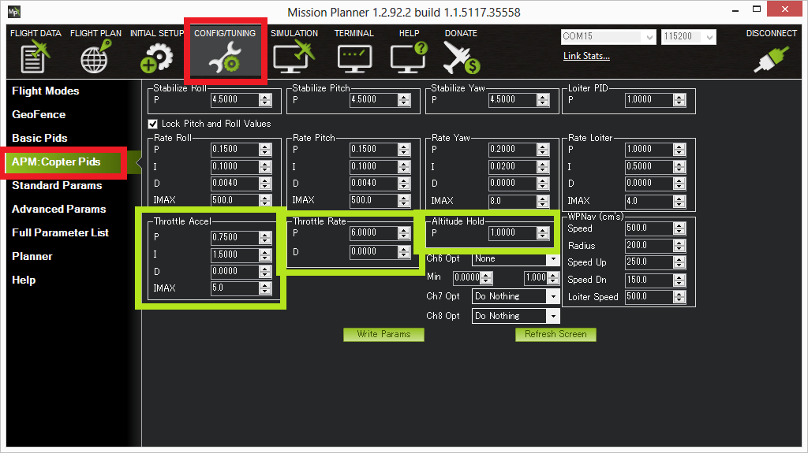

Altitude Hold Mode¶
In altitude hold mode, Copter maintains a consistent altitude while allowing roll, pitch, and yaw to be controlled normally. This page contains important information about using and tuning alt hold.
Overview¶
When altitude hold mode (aka AltHold) is selected, the throttle is automatically controlled to maintain the current altitude. Roll, Pitch and yaw operate the same as in Stabilize mode meaning that the pilot directly controls the roll and pitch lean angles and the heading.
Automatic altitude hold is a feature of many other flight modes (Loiter, Sport, etc) so the information here pertains to those modes as well.
Note
The autopilot uses a barometer which measures air pressure as the primary means for determining altitude (“Pressure Altitude”) and if the air pressure is changing in your flight area due to extreme weather, the copter will follow the air pressure change rather than actual altitude. When fitted and enabled, a downward facing rangefinder such as LiDAR or SONAR will automatically provide even more accurate altitude maintenance, up to the limit of the sensor.
Controls¶
The pilot can control the climb or descent rate of the vehicle with the throttle stick.
If the throttle stick is in the middle (40% ~ 60%) the vehicle will maintain the current altitude.
Outside of the mid-throttle deadzone (i.e. below 40% or above 60%) the vehicle will descend or climb depending upon the deflection of the stick. When the stick is completely down the copter will descend at 2.5m/s and if at the very top it will climb by 2.5m/s. These speeds can be adjusted with the PILOT_SPEED_UP and PILOT_SPEED_DN parameters. The acceleration used to establish these speeds is set by PILOT_ACCEL_Z.
The size of the deadband can be adjusted with the THR_DZ parameter. This param’s value should be between “0” and “400” with “0” meaning no deadband. “100” would produce a deadband 10% above and below mid throttle (i.e. deadband extends from 40% to 60% throttle stick position).
Copter allows arming and disarming in altitude hold mode. When disarming, the copter may need to rest in the landing position for a few seconds to allow the “landing checker” to verify that the copter has landed before you are able to disarm.
Tuning¶
{kind=link}
The Altitude Hold P is used to convert the altitude error (the difference between the desired altitude and the actual altitude) to a desired climb or descent rate. A higher rate will make it more aggressively attempt to maintain it’s altitude but if set too high leads to a jerky throttle response.
The Throttle Rate (which normally requires no tuning) converts the desired climb or descent rate into a desired acceleration up or down.
The Throttle Accel PID gains convert the acceleration error (i.e the difference between the desired acceleration and the actual acceleration) into a motor output. The 1:2 ratio of P to I (i.e. I is twice the size of P) should be maintained if you modify these parameters. These values should never be increased but for very powerful copters you may get better response by reducing both by 50% (i.e P to 0.5, I to 1.0).
{kind=link}
Verifying AltHold performance with dataflash logs¶
Viewing the altitude hold performance is best done by downloading a dataflash log from your flight, then open it with the mission planner and graph the barometer altitude, desired altitude and inertial navigation based altitude estimate. This data is found in slight different columns depending upon the version and board.
CTUN’s BAlt (baroalt), DAlt (desired alt) and Alt (inertial nav alt estimate)
The three should track well as shown below.
{kind=link}
Common Problems¶
High vibrations can lead to the copter rapidly climbing as soon as altitude hold is engaged. Check the Measuring Vibration and Vibration Dampening wiki pages for details on how to measure and reduce vibrations.
Copter slowly descends or climbs until the pilot retakes control in stabilize. Normally this is caused by not having the throttle stick in the mid position. This commonly happens when the pilot is switching into AltHold from a manual flight mode (like Stabilize) on a copter that does not hover at mid throttle. See the wiki page related to setting the mid throttle position.
The motors seem to stop for a moment just as AltHold is engaged but then it soon recovers. This normally occurs when the pilot enters AltHold while climbing rapidly. The target altitude is set at the moment the pilot switches into alt hold but because the vehicle is rising quickly it flies above the target. The aggressive altitude hold controller then responds by momentarily reducing the motors to near minimum until the copter begins falling back to the target altitude. The workaround is to enter AltHold while the copter is flying at a stable altitude.
Air pressure changes cause the vehicle to drift up or down by a couple of meters over longer period of time or for the altitude shown on the GCS to be inaccurate by a couple of meters including occasional negative altitudes (meaning altitudes below the home altitude).
Momentary altitude loss of 1m ~ 2m when the copter levels out after a high speed forward flight. This is caused by an aerodynamic effect which leads to a momentary low pressure bubble forming on the top of the copter where the autopilot is mounted which leads the altitude hold controller to believe it is climbing so it responds by descending. There is no cure for this behaviour at the moment although increasing the
EK2_ALT_M_NSEparameter reduces the effect but increases the change of Common Problem #1 listed above. TheEK2_ALT_M_NSEparameter has a range from 0.1 to 10.0 and allows increments of 0.1.Altitude hold becomes erratic when the vehicle is close to the ground or during landing. This can be caused by the barometer being affected by pressure changes created by prop-wash. The solution is to move the autopilot out of the prop wash effect or shield it within an appropriately ventilated enclosure.
Sudden altitude changes caused by light striking the barometer.
Adequate Power¶
It is very important that the vehicle has enough power available. Without this the AltHold and attitude controllers can require more power than is available from one or more motors and will be forced to sacrifice some control which could lead to a loss of attitude or altitude.
Ideally the vehicle should be able to hover at about 50% throttle (mid stick) and anything higher than 70% is dangerous.
Warning
If you incorporate expo on your transmitter, that directly increases the size of the Alt Hold throttle dead band.